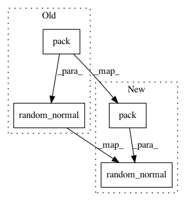

6b8a9a5f0e738d98904ff7c46c79a44bfdd56686,GPflow/model.py,GPModel,predict_f_samples,#GPModel#Any#Any#,370
Before Change
samples = []
for i in range(self.num_latent):
L = tf.cholesky(var[:,:,i] + eye(tf.shape(Xnew)[0])*1e-6)
samples.append(mu[:,i:i+1] + tf.matmul(L, tf.random_normal(tf.pack([tf.shape(L)[0], num_samples]), dtype=tf.float64)))
return tf.transpose(tf.pack(samples))
@AutoFlow(tf.placeholder(tf.float64, [None, None]))
After Change
mu, var = self.build_predict(Xnew, full_cov=True)
num_points = tf.shape(Xnew)[0]
sample_shape = tf.pack([num_points, num_samples])
samples = []
for i in range(self.num_latent):
L = tf.cholesky(var[:, :, i] + eye(num_points)*1e-6)
V = tf.random_normal(sample_shape, dtype=tf.float64)
samples.append(mu[:, i:i + 1] + tf.matmul(L, V))
return tf.transpose(tf.pack(samples))
@AutoFlow((tf.float64, [None, None]))
In pattern: SUPERPATTERN
Frequency: 3
Non-data size: 4
Instances
Project Name: GPflow/GPflow
Commit Name: 6b8a9a5f0e738d98904ff7c46c79a44bfdd56686
Time: 2016-05-31
Author: alexggmatthews@googlemail.com
File Name: GPflow/model.py
Class Name: GPModel
Method Name: predict_f_samples
Project Name: GPflow/GPflow
Commit Name: e315772007b2353eeca5565ed5b450fa48e82f2d
Time: 2016-05-31
Author: james.hensman@gmail.com
File Name: GPflow/model.py
Class Name: GPModel
Method Name: predict_f_samples
Project Name: GPflow/GPflow
Commit Name: 73a5954fcf6bd3c48391306f93c98bb7dd48287f
Time: 2016-04-13
Author: james.hensman@gmail.com
File Name: GPflow/model.py
Class Name: GPModel
Method Name: predict_f_samples